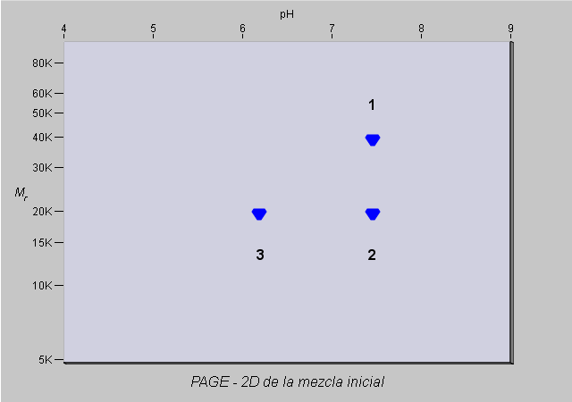
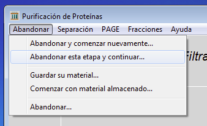

Volver al inicio
Ejercicio previoPróximo ejercicio
Volver al inicio
Ejercicio previoPróximo ejercicio
Ejercicio 3 de 6
Cromatografía de intercambio iónico de una mezcla simple de tres proteínas
Ahora usted va a tratar de purificar la mezcla utilizando cromatografía de intercambio iónico. La resina a utilizar será DEAE-celulosa. DEAE- significa diatilaminoetil-, un grupo amino terciario que contiene una carga positiva, excepto a valores de pH muy alcalino. Entonces su resina estará positivamente cargada y por lo tanto, unirá proteínas con carga neta negativa. Usted necesita pensar cuidadosamente acerca del punto isoeléctrico (pI) de las proteínas y el valor de pH del buffer en el cual se encuentra disuelta la proteína. Si el pH del buffer es el mismo que el pI de la proteína, la proteína tendrá carga neta cero (cuando las cargas negativas igualan las cargas positivas, la carga neta es cero). Si la proteína es suspendida en un buffer al cual el pH es menor que su pI, la proteína recibirá protones desde el buffer y tendrá una carga neta positiva. En el caso opuesto, si el buffer es más alcalino que el pI de la proteína, la proteína perderá protones y se volverá cargada negativamente. Este es un concepto importante para comprender como las proteínas interactúan con la resina intercambiadora de iones. Acá se presenta una electroforesis bi-dimensional de la mezcla de proteínas. Obsérvela nuevamente.

Si esta mezcla fuera aplicada a una columna DEAE-celulosa a pH 7.0, ¿que proteínas se enlazarían a la columna?
¿Qué proteínas se enlazarían a pH 8.0?
¿Qué proteínas se enlazarían a pH 6.0?

Ahora compruebe sus predicciones. Si usted no lo ha hecho, haga click en el menú Abandonar esta etapa y continúe.

Luego haga click en el menú Separación y seleccione Cromatografía de Intercambio iónico.

Haga click en las opciones DEAE-cellulose y Gradiente sal, luego haga click en el botón OK.

Ajuste el pH a 7.0 (utilice las flechas), luego haga click en el botón OK.
 Para eluir todas las proteínas enlazadas a la columna, usted necesita lavar la columna con una solución salina de buffer. Si la concentración de esta solución va aumentando con el tiempo, las proteínas eluirán siguiendo el orden de sus cargas netas.
Para eluir todas las proteínas enlazadas a la columna, usted necesita lavar la columna con una solución salina de buffer. Si la concentración de esta solución va aumentando con el tiempo, las proteínas eluirán siguiendo el orden de sus cargas netas.
Entonces se necesita indicar al programa que utilice esta solución. Seleccione comenzar el gradiente en 0.0 hasta 0.5 molar. Ahora haga click en el botón OK.
Una vez más, el programa simulará el comportamiento de la mezcla bajo las condiciones que usted ha señalado. Mire el perfil de elución. Como antes, el computador ha medido la absorbancia de cada fracción a 280nm. También ha medido la concentración salida de cada fracción. El gradiente salino comienza a emerger de la columna en la fracción número 32, entonces las fracciones anteriores representan material que no interactuó con la columna sino que pasó con el frente de corrida.
¿Cuantos peaks hay? Examine el material por electroforesis bi-dimensional. ¿Que proteína esta el que peak? ¿Esto es lo que usted esperaba?
Utilice el menú Abandonar, Abandonar esta etapa y continuar. Luego trate repitiendo el experimento a pH 8.0 y pH 6.0 (usted puede necesitar ajustar el gradiente de sal para asegurar que las tres proteínas son eluidas). çCómo cambian los resultados? ¿Puede explicar las diferencias?
¿Cree usted que la proteína 2 se puede purificar en un solo paso utilizando filtración por gel o cromatografía de intercambio iónico?
¿Puede pensar en un método para purificar la proteínas 2 desde esta mezcla, utilizando los métodos ensayados hasta ahora?
¿Haría alguna diferencia si se cambia el orden en que es ensayado cada método?
Trate de purificar la proteína número 2 .